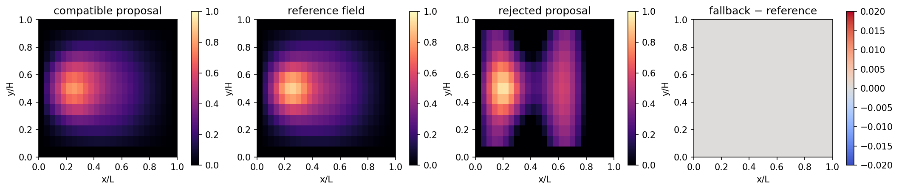

7.8.1. Assess a proposal and use a reference correction¶
Learning objective. Apply the course-owned adapter contract: validate compatible inputs, project bounds and irreversibility, assess the ToyHelmholtz residual, and distinguish one correction record from an end-to-end DAgger result.
Predict first. Predict which of the retained proposals passes a residual limit of \(0.30\), and whether a field with a lower residual than the limit should still be silently accepted when its feature order is incompatible.
Recorded computation: 5.179 seconds on the reference local CPU after setup. This is not a fresh Colab timing.
Read the code and its recorded outputs in order. To change inputs and run Python, download a notebook and use the course environment. The static book does not execute these cells in the browser.
Download practice notebook · Download with worked solutions · Environment setup
This notebook connects the checkpoint from notebook 04 to a
course-owned teaching adapter. The adapter verifies its
feature order and mesh signature, predicts under torch.no_grad(),
projects bounds and irreversibility, evaluates the discrete
ToyHelmholtzProblem residual, and falls back to the reference
solve when the proposal fails the gate.
The public PhAST learned-damage hook is an inference interface with detached/no-gradient prediction. This notebook does not train through that hook and its residual is not a PhAST AT2 residual. It teaches the reusable logic: proposal → compatibility → constraint projection → assess → correction/record.
{'course_layout': 'teaching/ukacm_autumn_school_2026 located', 'torch': '2.8.0', 'device': 'cpu', 'dtype': 'torch.float64'}
import json
from day2_helpers.course_tools import (
FEATURE_ORDER, ToyDamageAdapter, ToyHelmholtzProblem,
load_toy_model, make_toy_checkpoint,
)
checkpoint_path = assets_dir() / "models" / "tiny_damage_mlp.pt"
if not checkpoint_path.exists():
# This makes the notebook independently executable. In the normal
# sequence notebook 04 has already produced this exact artifact.
make_toy_checkpoint(checkpoint_path, epochs=400, force=True)
model, metadata = load_toy_model(checkpoint_path)
problem = ToyHelmholtzProblem()
adapter = ToyDamageAdapter(model, metadata, problem)
print({"interface_version": metadata["interface_version"], "feature_order": metadata["feature_order"], "mesh_signature": metadata["mesh_signature"]})
{'interface_version': 'ukacm-toy-damage-v1', 'feature_order': ['x_over_L', 'y_over_H', 'load_factor'], 'mesh_signature': [25, 13]}
# Compatible held-out request. d_previous comes from a lower-load state.
load_factor = 0.94
d_previous = problem.reference_field(0.82)
proposal = adapter.propose(problem.features(load_factor), d_previous=d_previous)
assessment = adapter.assess(proposal, load_factor, residual_limit=0.30)
reference = problem.reference_field(load_factor)
corrected = proposal if assessment["accepted"] else adapter.fallback(load_factor, d_previous)
print({"normal_proposal": assessment, "field_rmse": float(torch.sqrt(torch.mean((proposal-reference)**2)))})
assert assessment["accepted"], assessment
# A deliberately corrupted field is projected but fails the same residual gate.
corrupted = torch.where(
problem.boundary_mask,
torch.zeros_like(proposal),
(proposal + 0.30 * torch.sin(12 * problem.coordinates[:, 0])).clamp(0, 1),
)
rejected = adapter.assess(corrupted, load_factor, residual_limit=0.30)
fallback = adapter.fallback(load_factor, d_previous)
print({"corrupted_proposal": rejected, "fallback_residual": problem.relative_residual(fallback, load_factor)})
assert not rejected["accepted"], rejected
assert problem.relative_residual(fallback, load_factor) < 1.0e-10
{'normal_proposal': {'toy_relative_residual': 0.19402747874051113, 'residual_limit': 0.3, 'accepted': True, 'scope': 'ToyHelmholtzProblem residual only; not a PhAST AT2 residual'}, 'field_rmse': 0.029164814588982523}
{'corrupted_proposal': {'toy_relative_residual': 1.164008876432137, 'residual_limit': 0.3, 'accepted': False, 'scope': 'ToyHelmholtzProblem residual only; not a PhAST AT2 residual'}, 'fallback_residual': 2.969565304912253e-15}
# Explicitly demonstrate an interface failure instead of silently reshaping input.
try:
adapter.propose(
problem.features(load_factor),
feature_order=("load_factor", "x_over_L", "y_over_H"),
)
except ValueError as error:
compatibility_message = str(error)
else:
raise AssertionError("An incompatible feature order was unexpectedly accepted.")
print("Expected incompatibility:", compatibility_message)
nan_features = problem.features(load_factor).clone()
nan_features[0, 0] = float("nan")
try:
adapter.propose(nan_features)
except ValueError as error:
finiteness_message = str(error)
else:
raise AssertionError("A non-finite adapter input was unexpectedly accepted.")
print("Expected finite-input rejection:", finiteness_message)
Expected incompatibility: Incompatible feature order. Expected ['x_over_L', 'y_over_H', 'load_factor'], got ['load_factor', 'x_over_L', 'y_over_H'].
Expected finite-input rejection: Incompatible feature tensor: all adapter inputs must be finite.
def field_image(values):
return values.detach().reshape(problem.ny, problem.nx).cpu().numpy()
fig, axes = plt.subplots(1, 4, figsize=(14, 3.2), constrained_layout=True)
panels = (
(proposal, "compatible proposal", "magma", (0, 1)),
(reference, "reference field", "magma", (0, 1)),
(corrupted, "rejected proposal", "magma", (0, 1)),
(fallback - reference, "fallback − reference", "coolwarm", (-0.02, 0.02)),
)
for ax, field, title, cmap, limits in zip(axes, *zip(*panels)):
image = ax.imshow(field_image(field), origin="lower", extent=(0,1,0,1), cmap=cmap, vmin=limits[0], vmax=limits[1])
ax.set(title=title, xlabel="x/L", ylabel="y/H", aspect="equal")
fig.colorbar(image, ax=ax, shrink=0.78)
fig.savefig(assets_dir() / "toy_adapter_fallback.png", dpi=160, bbox_inches="tight")
display_figure(fig, alt="Toy adapter's compatible proposal, reference, rejected proposal, and fallback error.")
plt.close(fig)

# One correction record is a replay-style teaching artefact, not an
# end-to-end DAgger result. Reference-label cost remains part of any
# later retraining comparison.
replay_record = {
"scope": "course-owned ToyHelmholtzProblem; one offline correction record, not PhAST DAgger",
"load_factor": load_factor,
"feature_order": list(FEATURE_ORDER),
"normal_assessment": assessment,
"rejected_assessment": rejected,
"correction": "classical ToyHelmholtzProblem reference solve",
"heldout_evaluation_frozen": True,
}
replay_path = assets_dir() / "toy_adapter_replay_record.json"
replay_path.write_text(json.dumps(replay_record, indent=2), encoding="utf-8")
print({"replay_record": str(replay_path.relative_to(COURSE_ROOT)), "decision": "accept compatible / fallback rejected"})
{'replay_record': 'assets/day2_forward/toy_adapter_replay_record.json', 'decision': 'accept compatible / fallback rejected'}
A genuine offline DAgger cycle would collect model-induced states, obtain reference labels, aggregate only training data, retrain, and reassess a frozen held-out set. The small record above is the transparent first step, not evidence that such a loop has been run for PhAST fracture or that a learned proposal accelerates it.
7.8.1.1. Exercises¶
Try each question before opening the hint or worked solution. Keep the original calculation as your reference.
7.8.1.1.1. Exercise 1: Make the residual-gate decision¶
At load factor \(0.94\), the compatible proposal has relative residual \(0.1940274787\) and the deliberately corrupted proposal has relative residual \(1.1640088764\). The acceptance limit is \(0.30\). The reference fallback has residual \(2.9696\times10^{-15}\).
Decide accept or reject for each proposal.
Compute the compatible proposal’s margin below the limit and the corrupted proposal’s excess above it.
Explain why the reference result is still needed after a rejection.
Hint 1
The adapter accepts only when residual \(\le0.30\). Subtract in the direction that produces a positive margin or excess.
Worked solution 1
The compatible proposal is accepted because
The corrupted proposal is rejected because
The accepted proposal’s margin is
whereas the corrupted proposal exceeds the limit by
On rejection, the adapter invokes the classical ToyHelmholtz reference solve, which has a near-machine-precision residual in the retained result. The decision is not a claim of a PhAST AT2 residual, formal safety, or a measured acceleration; it is a transparent toy fallback demonstration.
7.8.1.1.2. Exercise 2: Project a field and identify what DAgger still requires¶
For an interior node, the adapter first clamps a raw proposal to \([0,1]\) and then applies irreversibility with \(\max(d_{\mathrm{proposal}},d_{\mathrm{previous}})\). Finally it enforces zero on the ToyHelmholtz boundary.
Compute the final value for each case: (a) raw \(0.15\), previous \(0.25\), interior; (b) raw \(1.4\), previous \(0.25\), interior; (c) raw \(0.7\), previous \(0.25\), boundary.
Name two interface checks that must happen before this projection.
The notebook writes one correction record. List the missing stages needed before it could be called an end-to-end offline DAgger cycle.
Hint 2
Apply the operations in order. The boundary rule is last, so it overrides an otherwise admissible projected value.
Worked solution 2
(a) Clamp leaves \(0.15\), irreversibility gives \(\max(0.15,0.25)=0.25\), and the node is interior, so the final value is \(0.25\). (b) Clamp maps \(1.4\) to \(1\), then \(\max(1,0.25)=1\), so the final value is \(1\). (c) The interior-style projection would be \(0.7\), but the boundary rule is applied last, so the final value is \(0\).
The adapter checks that all feature values are finite, that feature order is exactly \([x/L,y/H,\mathrm{load\ factor}]\), that the mesh signature matches \([25,13]\), and that the feature tensor shape is compatible. A feature-order mismatch or a NaN is rejected rather than silently reshaped.
One record is only a replay-style teaching artefact. A real offline DAgger cycle would collect states induced by the current model over a defined rollout, obtain reference labels for those states, aggregate the new labelled cases with the training data, retrain, and reassess a frozen held-out evaluation set. It should also report the reference-label cost. This lesson uses inference under torch.no_grad() and a ToyHelmholtz residual, so it is neither gradient-based training through PhAST nor an executed PhAST DAgger cycle.